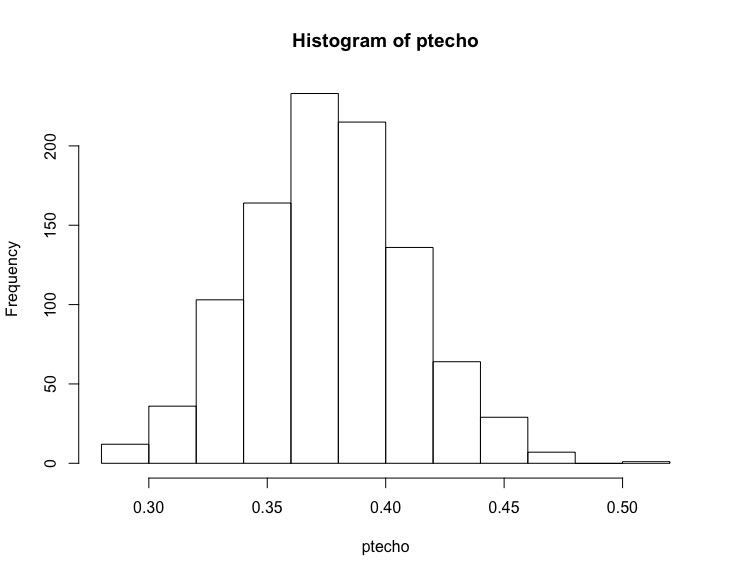
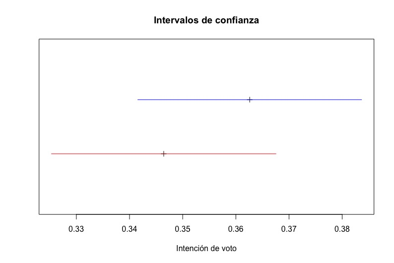
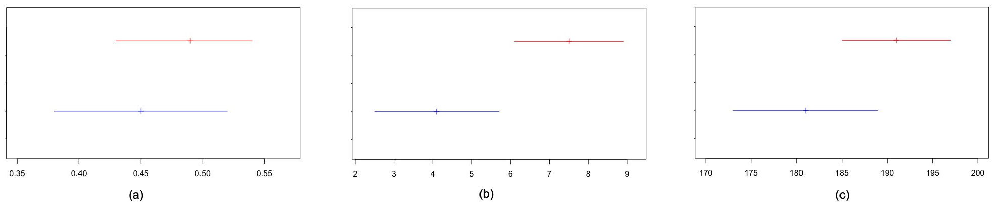
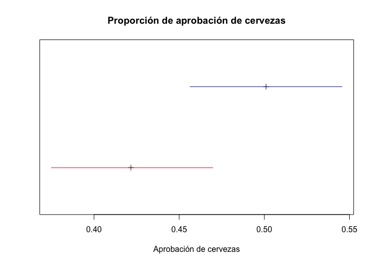
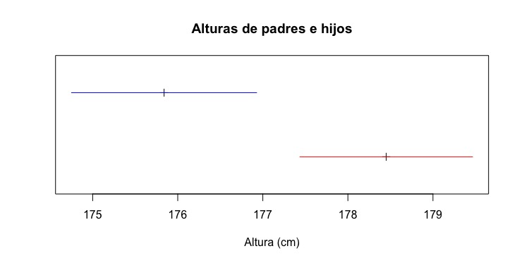

Capítulo 10 Intervalos de confianza: una medida de la incertidumbre
10.1 Incertidumbre en muestras de proporciones
El muestreo consiste en escoger los datos de algunos individuos de una población, llamada una muestra, para obtener información de toda la población a partir de ella. No es difícil darse cuenta que si tomo dos muestras de la misma población es muy poco probable obtener exactamente los mismos resultados. Incluso si los datos son poco problemáticos, lo hago perfectamente bien y no cometo ningún error, cada vez que tome una muestra obtendré resultados algo diferentes (cuánto más problemáticos sean los datos, más diferentes tenderán a ser). La estadística nos permite cuantificar la incertidumbre asociada a un muestreo bien hecho. Esto se hace a través de los llamados intervalos de confianza. Veamos cómo se calcula el intervalo de confianza de la proporción de individuos con alguna característica.
10.1.1 Una simulación
Empecemos por una simulación. Tenemos una población muy numerosa, potencialmente infinita, de la cual hay individuos con una cierta característica. Quizá la población es de caramelos y la característica es tener sabor de fresa; o la población es de personas y la característica es ser hinchas de la UD Porreres; o son tiros libres en baloncesto y la característica es entrar en la canasta. Tomar un individuo de la población y mirar si tiene o no la característica es llamado una prueba de Bernoulli. Si tiene la característica se dice que es un éxito y el no tenerla es un fracaso. Un muestreo de proporciones es una serie de pruebas de Bernoulli y nos interesa obtener la proporción de éxitos.
Vamos a hacer una simulación con R. Supongamos que tenemos una población muy grande de la que sabemos, porque así lo programamos, la proporción de individuos que tienen la característica. Representamos esta proporción de la población, deconocida, por la letra griega \(\theta\). Sea \(\theta = 0,38\) esta proporción: exactamente el 38% de nuestra población es hincha de la UD Porreres. Creamos 1000 muestras de 200 pruebas de Bernoulli cada una. Un «0» representa un fracaso y un «1» representa un éxito. Lo metemos en una matriz de 200 filas y 1000 columnas. Cada columna es una muestra. El código de R para hacer esto es el siguiente:
# La proporción
pr = 0.38
# 1000 muestras de 200 individuos
dt = sample(0:1, 200000, replace = T, prob = c(1-pr,pr))
muestreo = matrix(dt, nrow = 200, ncol = 1000)Calculamos la proporción de éxitos de cada prueba. Como astutamente los éxitos son «1» y los fracasos son «0», nos basta sumar las columnas y dividir por el tamaño de la muestra:
En estadística se pone un circunflejo (\(\hat{}\)) encima de una variable para indicar que es el valor medido en un muestreo de esa variable. Así, \(\theta\) es la proporción en una población, mientras que \(\hat{\theta}\), pronunciado zeta-gorro o zeta-techo, es la proporción que hemos medido en una muestra de la población. En nuestra simulación, el resultado del primer muestreo nos ha dado \(\hat{\theta} = 0.355\), el segundo \(\hat{\theta} = 0.350\), el tercero \(\hat{\theta} = 0.405\), etc. (recordemos que esta es una simulación con muestras aleatorias. Si ejecuta el mismo código obtendrá valores diferentes cada vez). Algunas veces obtenemos valores por debajo de \(\theta\), la proporción de toda la población, y otras veces están por encima. Esto lo vemos claramente en el histograma de los 1000 valores de \(\hat{\theta}\) de las 1000 muestras obtenidas que se muestra a continuación:

Estamos interesados en el rango del 90% central de los datos. Es decir eliminamos el 5% más bajo y el 5% más alto y miramos el rango de lo que nos queda. Para ello ordenamos los \(\hat{\theta}\) y miramos el que está en la posición 50 y 950. Para poder reutilizar el código, usamos unas variables que calculan las posiciones que tenemos que mirar para obtener este rango:
# Las ordenamos
zetatecho = sort(zetatecho)
# El 90% central
prob1 = 0.90
zetatecho[((1-prob1)/2)*1000]## [1] 0.325## [1] 0.435En esta simulación en concreto obtenemos que el rango está entre 0,325 y 0,435. Es decir que si escogemos una muestra de las 1000 al azar, tenemos una probabilidad del 90% de que esté entre estos dos valores. Podemos escribirlo como \[P[0,325 \leq \hat{\theta} \leq 0,435] = 0.9\]
Como hemos creado este mundo, conocemos \(\theta\). Esto nos permite reescribir la expresión como \[P[0,325 - 0,38 = 0,055 \leq \hat{\theta} - \theta \leq 0,435 - 0,38 = 0,055] = 0.9\] Y esto nos permite escribir \[P[ \hat{\theta} - 0,055 \leq \theta \leq \hat{\theta} + 0,055] = 0.9\]
Es decir, que si cogemos una muestra al azar y medimos la proporción de esta muestra, \(\hat{\theta}\), tenemos una probabilidad de \(0.9\) de que el valor de la población total esté \(0.055\) por encima o por debajo de este valor.
Podemos repetir esto con cualquier probabilidad que queramos. Por ejemplo 0.8 o 0.95:
## [1] 0.335## [1] 0.425## [1] 0.315## [1] 0.445En estos casos obtenemos que hay una probabilidad de 0.8 de que la proporción de la población total \(\theta\) esté en \([0.335, 0.425]\) o, lo que es lo mismo, en \(\hat{\theta}\pm 0,045\) (en esta simulación concreta. En otras variará un poco). Y una probabilidad de \(0.95\) de que esté en \([0.315, 0.445]\) o, lo que es lo mismo, en \(\hat{\theta}\pm 0,065\).
Es importantísimo no olvidar que esto son probabilidades. Hay un buen número de muestras, perfectamente hechas y perfectamente válidas, que están fuera de nuestra horquilla. Además, en nuevas simulaciones obtendríamos valores diferentes. Estamos cuantificando la incertidumbre. Esa es la palabra clave: incertidumbre. Y la cuantificamos, no la eliminamos.
10.1.2 Intervalos de confianza
En nuestra simulación, nuestra creación, conocíamos \(\theta\) y esto nos permitía calcular la horquilla. Pero el caso real es que no conocemos \(\theta\). Precisamente tomamos la muestra para saber algo de \(\theta\). Para poder rigurosamente saber algo de \(\theta\) a partir de \(\hat{\theta}\) necesitamos el razonamiento matemático que vamos a detallar.
Sea \(Y\) una variable aleatoria que es el resultado de una prueba de Bernoulli. \(Y = 1\) si la prueba es un éxito. Esto pasa con probabilidad \(\theta\). Si es un fracaso, \(Y = 0\), y esto pasa con probabilidad \(1 - \theta\). El valor esperado de \(Y\) es \(E[Y] = 1\cdot \theta + 0\cdot (1-\theta) = \theta\).
Tomamos una muestra de \(n\) elementos independientes: si un individuo posee o no la característica es independiente de todos los demás. La proporción de la muestra, \(\hat{\theta}\), es otra variable aleatoria: \[\hat{\theta} = \frac{Y + Y + \cdots + Y}{n}.\]
El valor esperado de \(\hat{\theta}\) es: \[E[\hat{\theta}] = E\left[\frac{Y + Y + \cdots + Y}{n}\right] = \frac{E[Y + Y + \cdots + Y]}{n} = \frac{n \, E[Y]}{n} = \frac{n\theta}{n} = \theta\]
Esto quiere decir que el valor medido, y conocido, \(\hat{\theta}\) va a estar alrededor de donde está nuestro desconocido \(\theta\). Es una buena noticia.
Calculemos ahora la desviación típica de \(\hat{\theta}\). La desviación típica de \(Y\), \(\mathrm{sd}(Y)\), la podemos calcular considerando que una prueba de Bernoulli sigue una distribución binomial con tamaño 1 y probabilidad \(\theta\). Por lo tanto \(\mathrm{sd}(Y) = \sqrt{\theta (1-\theta)}.\) Luego \[\begin{eqnarray*} \mathrm{sd}(\hat{\theta}) & = & \mathrm{sd}\left(\frac{Y + Y + \cdots + Y}{n}\right)\\ & = & \frac{\mathrm{sd}(Y + Y +\cdots +Y)}{n}\\ & = & \frac{\sqrt{\mathrm{sd}(Y)^{2} + \cdots + \mathrm{sd}(Y)^{2}}}{n}\\ & = & \frac{\sqrt{\theta(1-\theta) + \cdots + \theta(1-\theta)}}{n}\\ & = & \frac{\sqrt{n\theta(1-\theta)}}{n} \\ & = & \sqrt{\frac{\theta (1-\theta)}{n}} \end{eqnarray*}\]
Desgraciadamente esto no nos ayuda mucho. Hemos obtenido la desviación típica de \(\hat{\theta}\) en función del desconocido \(\theta\).
Para resolver este problema definimos un concepto importante: error estándar. Definimos el error estándar de \(\hat{\theta}\), \(\mathrm{se}(\hat{\theta})\), como \[\mathrm{se}(\hat{\theta}) = \sqrt{\frac{\hat{\theta} (1-\hat{\theta})}{n}}\]
Es decir, el error estándar tiene la misma expresión que la desviación típica, pero sustituyendo el desconocido \(\theta\) por el conocido \(\hat{\theta}\).
Para poder ahora saber algo de \(\theta\) a partir de \(\hat{\theta}\) entra uno de los teoremas más importantes de la estadística, el teorema central del límite. Este teorema nos dice que si tenemos muchas variables aleatorias idénticamente distribuidas, con cualquier distribución, y que son independientes una de otra, entonces la media de estas variables tiende a una distribución normal. A menudo se usa la sigla iid que significa «independientes e idénticamente distribuidas». Este teorema es fundamental para muchos resultados de estadística: para saber la distribución de la media de variables aleatorias, no tenemos que saber nada de la distribución de ellas. Eso sí, siempre y cuando las variables sean iid.
Volvamos a nuestro problema original. A partir del teorema central del límite se puede establecer que \[\frac{\hat{\theta} -\theta}{\mathrm{se(}\hat{\theta})} \leadsto \mathrm{N}(0, 1)\]
(«\(\leadsto \mathrm{N}(0,1)\)» se lee como «tiende a la distribución normal de media 0 y desviación típica 1»). Cuanto mayor es \(n\) más cerca está la distribución de \((\hat{\theta} -\theta)/\mathrm{se}(\hat{\theta})\) de la normal de media 0 y desviación típica 1.
Si lo pensamos un poco, esto lo podemos reescribir como \[\hat{\theta} \leadsto \mathrm{N}(\theta, \mathrm{se(}\hat{\theta})).\]
Sabiendo esto podemos recuperar la estrategia que usamos en la
simulación. Suponemos que \(n\) es lo suficientemente grande para que
podamos usar la normal N(0, 1) sin demasiado error. Como en la
simulación, nos interesa el rango del, digamos, 90% central de los
datos. “Quitamos” de N(0, 1) el 5% del extremo inferior y el 5%
del extremo superior. Esto lo podemos hacer con R con la función
qnorm(). La instrucción sería qnorm(0.05, 0, 1)
para el inferior y qnorm(0.95, 0, 1) para el superior. Los
valores que obtenemos son \(-1,645\) y \(1,645\). Ahora podemos escribir:
\[P[-1,645 \leq \frac{\hat{\theta} -\theta}{\mathrm{se(}\hat{\theta})} \leq 1,645] = 0.9\]
lo que con un poco de álgebra se convierte en: \[P[\hat{\theta}-1,645\,\mathrm{se(}\hat{\theta}) \leq \theta \leq \hat{\theta} + 1,645\,\mathrm{se(}\hat{\theta})] = 0.9.\]
Es decir que hay una probabilidad de 0,9 de que el valor de toda la población, esa desconocida \(\theta\), esté a 1,645 veces el error estandar por encima o por debajo del \(\hat{\theta}\), el valor medido en nuestra muestra. A este intervalo se le llama Intervalo de Confianza.
Naturalmente, podemos repetir esto para cualquier valor de probabilidad que nos interese. Lo hemos hecho con 0,9, pero lo podemos hacer con 0,8, 0,95, 0,7732… A esta probabilidad se le llama el nivel de confianza.
Un intervalo de confianza de proporciones a un nivel de confianza NC es el intervalo centrado en \(\hat{\theta}\) en el que se estima que estará la proporción de la población \(\theta\) con una probabilidad NC.
Algunas cuestiones a tener en cuenta:
Nadie asegura que \(\theta\) esté en el intervalo de confianza. Siempre hay una probabilidad de que esté fuera.
A la hora de calcular el intervalo estamos suponiendo que hemos tomado la muestra con todo rigor: de forma aleatoria, sin sesgos, etc. Si no es así, si la muestra está mal tomada, no significa que el intervalo es mayor, significa que no sabemos nada: puede ser mayor, puede ser menor, puede estar en otro lado.
Lo que hemos hecho en el fondo es una aproximación que es tanto mejor cuánto mayor es \(n\). Para valores de \(n\) pequeños la incertidumbre es mayor que lo que sale de este procedimiento.
Aunque no lo hemos mostrado, la incertidumbre también depende del valor de \(\hat{\theta}\). Si es muy cercano a 0 o a 1, tenemos un caso problemático, y necesitamos un valor muy muy grande de \(n\) para tener una aproximación aceptable.
Estamos suponiendo independencia: el que una prueba de Bernoulli dé un determinado valor (éxito o fracaso) no influye en los demás. Por eso en una encuesta no preguntamos a una pandilla de amigos. Hay muchos casos en el que no hay independencia. Por ejemplo, si llueve o no mañana no es independiente de si llueve o no hoy: es más probable que llueva mañana si llueve hoy que si hace sol. A veces no está nada claro: ¿depende el encestar un tiro libre de si se ha encestado o fallado el anterior?
Cuánto mayor es el nivel de confianza, mayor será el intervalo: si queremos estar más seguros que el valor de la población está en el intervalo, debemos hacerlo mayor.
10.1.3 Fuga de probabilidad
En algunos casos nos puede surgir un problema. Supongamos que
preguntamos en Palma a una muestra bien escogida de 100 personas si
son hinchas de la UD Porreres. Obtenemos 2 éxitos (son hinchas) y 98
fracasos (ellos se lo pierden). El valor de \(\hat{\theta}\) es 0.02.
Hacemos los cálculos para un nivel de confianza de 0.95. El error
estándar es
\[\mathrm{se} = \sqrt{\frac{0.02\cdot 0.98}{100}} = 0.014\]
Para un nivel de confianza de 0.95 hemos de multiplicar el error
estándar por un factor (obtenido con qnorm(0.975, 0, 1) de
1.96. El intervalo de confianza queda:
\[ [0.02 - 0.014\cdot 1.96, 0.02 + 0.014\cdot 1.96] = [-0.007, 0.047] \]
Nos ha dado una proporción negativa, lo que es imposible. No basta con cambiar el \(-0.007\) por un \(0\), el problema es más grave: estamos dando probabilidad a sucesos imposibles. Tenemos lo que se llama una fuga de probabilidad. Esto significa que el cálculo es incorrecto y, por lo tanto, el extremo superior de nuestro intervalo no es \(0.047\). Si nos encontramos ante esta situación podemos:
Indicar que no se puede calcular con precisión este intervalo de confianza (y tirar nuestros cálculos). Sólo podemos decir que la proporcion es pequeña. O grande, pues tenemos el mismo problema si es cercana a 1.
Si la fuga es pequeña, cambiar el extremo inferior por 0 (o el superior por 1 si estamos al otro extremo) e indicar que el intervalo de confianza es aproximado.
Repetir el experimento pero con un \(n\) mayor. Cuanto mayor es \(n\) más estrecho es el intervalo y menos fuga hay. Es por eso que si las proporciones están cerca de 0 o de 1 hemos de usar un valor de \(n\) más grande de lo que en principio podría parecer.
Usar otros métodos para calcular los intervalos de confianza (y cualquier otro cálculo de inferencia). Existen métodos específicos para problemas como este, pero no los explicaremos aquí.
10.1.4 Un ejemplo
En nuestro sistema de control de calidad hemos inspeccionado 83 circuitos y 54 se han calificado de «Cumplen especificaciones». ¿Cuál es el intervalo de confianza con un nivel de confianza del 90%?¿Y con un nivel de confianza del 95%?
Empecemos por calcular \(\hat{\theta}\). Han sido 54 éxitos de 83 intentos. Por lo tanto \[\hat{\theta} = 54/83 = 0.6506.\]
Calculemos a continuación el error estándar: \[\mathrm{se}(\hat{\theta}) = \sqrt{\frac{\hat{\theta} (1 - \hat{\theta})}{n}} = \sqrt{\frac{0.6506 (1 - 0.6506)}{83}} = 0.0523.\]
Ahora hemos de calcular el factor por el que hemos de multiplicar el
error estándar. Este factor depende del nivel de confianza. Usaremos
R. Llamamos nc a la variable con el nivel de confianza,
entonces podemos calcular los factores mediante la instrucción
qnorm((1+nc)/2). Notemos que los parametros de
qnorm() mean y sd tienen como valores por
defecto 0 y 1 respectivamente y por eso no es necesario introducirlos
y que basta calcular un valor, puesto que debido a la simetría de la
distribución normal, el otro valor es el de signo opuesto. Para
nc = 0,9 ya lo hemos calculado antes y sabemos que es 1,645.
Entonces el intervalo de confianza es
\[ [0.6506 - 1.645\cdot 0.0523,\; 0.6506 + 1.645\cdot 0.0523] = [0.565, \; 0.737].\]
Para un nivel de confianza del 95% lo único que cambia es el factor.
Con la función qnorm() calculamos el nuevo factor y es
1,956. El intervalo de confianza con este nuevo nivel de confianza es
\[ [0.6506 - 1.956\cdot 0.0523,\; 0.6506 + 1.956\cdot 0.0523] = [0.548, \; 0.753].\]
En resumen, hay una probabiliad de 0,9 que la proporción de la población esté en el intervalo [0.565, 0.737] y una probabilidad de 0.95 de que esté en [0.548, 0.753]. Y una probabilidad menor, pero que no hemos de olvidar, de que esté fuera de estos intervalos.
10.1.5 Resumen de intervalos de confianza de proporciones
Sea \(\theta\) la proporción de toda una población con una cierta característica. Tomamos una muestra de tamaño \(n\), suficeintemente grande. La muestra ha sido tomada con todo rigor. Llamamos \(\hat{\theta}\) a la proporción de la muestra con la característica.
Un intervalo de confianza de proporciones a un nivel de confianza NC es el intervalo centrado en \(\hat{\theta}\) en el que se estima que estará la proporción de la población \(\theta\) con una probabilidad NC.
Para calcular el intervalo de confianza debemos:
Calcular \(\hat{\theta}\);
Calcular el error estándar \[\mathrm{se}(\hat{\theta}) = \sqrt{\frac{\hat{\theta} (1-\hat{\theta})}{n}};\]
Determinar el nivel de confianza NC que queremos para nuestro intervalo;
Calcular el factor \(\mathit{fc}\) para este nivel de confianza. En R podemos usar la función
qnorm()}:fc = qnorm((1+nc)/2)};El intervalo de confianza para este nivel de confianza es \[ [\hat{\theta} - \mathit{fc}\cdot \mathrm{se}(\hat{\theta}), \; \hat{\theta} + \mathit{fc}\cdot \mathrm{se}(\hat{\theta})].\]
Si hay fuga de probabilidad, decidir qué se hace.
10.2 Incertidumbre en muestras de medias
El muestreo consiste en escoger los datos de algunos individuos de una población, llamada una muestra, para obtener información de toda la población a partir de ella. No es difícil darse cuenta que si tomo dos muestras de la misma población es muy poco probable obtener exactamente los mismos resultados. Incluso si lo hago perfectamente bien y no cometo ningún error, cada vez que tome una muestra obtendré resultados algo diferentes. La estadística nos permite cuantificar la incertidumbre asociada a un muestreo bien hecho. Esto se hace a través de los llamados intervalos de confianza. Veamos cómo se calcula el intervalo de confianza de una media de valores.
10.2.1 Una simulación
Empecemos por una simulación. Tenemos una población muy numerosa, potencialmente infinita, y medimos una característica numérica de cada uno de los individuos. Quizá la población es de fuentes de alimentación y medimos el voltaje de salida; o la población es de personas y la característica es la altura o el peso; o son años y la característica es la cantidad de lluvia caída en una estación meteorológica determinada. En nuestro caso vamos a recrear los datos tomados por el científico belga Adolphe Quetelet. Quetelet midió el perímetro torácico de 5738 soldados escoceses y encontró que se aproximaba muy bien a una distribución normal de media 101.1 cm y desviación típica 5,2 cm.
Hagamos una simulación con R. Empezamos por recrear los datos de
Quetelet. La hacemos a partir de rnorm. Usamos la función
set.seed() que nos permite establecer la “semilla” del
generador de números aleatorios. Así, aunque la secuencia sigue
siendo aleatoria, cada vez que ejecute el programa me saldrá la misma
secuencia. Esto significa que si ejecutan este script
deberían obtener exactamente los mismos resultados que los mostrados
aquí.
# Recreamos los datos de los 5738 soldados escoceses tomados por Quetelet.
# Medida de pecho: 101.1 cm de media y 5.2 cm de desviacion tipica. Usamos
# set.seed para poder reproducir valores aleatorios
set.seed(2101)
chest = rnorm(5738,101.1,5.2)
mu = mean(chest)La media de toda la población la representamos con una letra
griega, \(\mu\). En este caso, es \(\mu =\) 101.07, ligeramente diferente del 101.1 introducido en rnorm(). Vamos a coger ahora 1000
muestras diferentes, cada una de 15 individuos. Lo vamos a organizar
en una matriz donde cada columna es una muestra. No es necesario
coger las 1000 muestras una por una: basta coger los 15 000 valores de
golpe y organizarlos adecuadamente.
# Creamos 1000 muestras de 15 elementos
dt = sample(chest, 15000, replace = T)
muestras = matrix(dt, nrow = 15, ncol = 1000)Calculamos las medias de cada muestra. Como cada columna es una muestra, hemos de calcular las medias de las columnas. R tiene una función para esto:
## [1] 98.62854 102.12771 102.01141 102.89417 101.27689Vemos que los 5 primeros valores son 98.63, 102.13, 102.01, 102.89, 101.28.
Llamamos a cada una de las medias de las muestras “mu-techo” o “mu-gorro” y lo vamos a representar por \(\hat{\mu}\). A menudo se le representa con \(\bar{x}\), con la barra sobre la variable indicando que es una media. Esto es confuso, pues la variable poblacional es \(\mu\) y las de la muestra \(x\), y prefiero mantener la notación que las variables poblacionales sean letras griegas y los circunflejos indican que son valores de muestras.
El histograma de los \(\hat{\mu}\) de la simulación es

Camo en el caso de las proporciones, estamos interesados en el rango del 90% central de los datos. Hacemos lo mismo que entoneces: eliminamos el 5% más bajo y el 5% más alto y miramos el rango de lo que nos queda. Para ello ordenamos los \(\hat{\mu}\) y miramos el que está en la posición 50 y 950. Es prácticamente el mismo código que el usado en la sección anterior:
# Las ordenamos
mu_techo = sort(mu_techo)
# El 90% central
prob1 = 0.90
mu_techo[((1-prob1)/2)*1000]## [1] 98.85767## [1] 103.322En esta simulación en concreto obtenemos que el rango está entre 98.9 y 103.3. Es decir que si escogemos una muestra de las 1000 al azar, tenemos una probabilidad del 90% de que \(\hat{\mu}\) de esta muestra esté entre estos dos valores. Podemos escribirlo como \[P[98,9 \leq \hat{\mu} \leq 103,3] = 0.9\]
Como hemos creado este mundo, conocemos la media. Esto nos permite reescribir la expresión como \[P[101,07 - 98,95 = 2,11 \leq \hat{\mu} - \mu \leq 103,3 - 101,07 = 2,24] = 0.9\] Y esto nos permite escribir \[P[ \hat{\mu} - 2,11 \leq \mu \leq \hat{\mu} + 2,24] = 0.9\]
Es decir, que si cogemos una muestra al azar y medimos la proporción de esta muestra, \(\hat{\mu}\), tenemos una probabilidad de \(0.9\) de que \(\mu\), la media de la población total, esté \(2,11\) por debajo o \(2,24\) por encima de este valor.
Podemos repetir esto con cualquier probabilidad que queramos. Por ejemplo 0.8 o 0.95:
## [1] 99.35537## [1] 102.7825## [1] 98.51402## [1] 103.7399En estos casos obtenemos que hay una probabilidad de 0.8 de que la media de la población total \(\mu\) esté en \([99.35,\, 102.79]\) o, lo que es lo mismo, en \(\hat{\mu}\pm 0,045\). Y una probabilidad de \(0.95\) de que esté en \([98.51,\, 103.74]\) o, lo que es lo mismo, en \(\hat{\mu}\pm 2,61\).
Es importantísimo no olvidar que esto son probabilidades. Hay un buen número de muestras, perfectamente hechas y perfectamente válidas, que están fuera de nuestra horquilla. Además, en nuevas simulaciones obtendríamos valores diferentes. Estamos cuantificando la incertidumbre. Esa es la palabra clave: incertidumbre. Y la cuantificamos, no la eliminamos.
10.2.2 Intervalos de confianza
En nuestra simulación, nuestra creación, conocíamos \(\mu\) y esto nos permitía calcular la horquilla. Pero el caso real es que no conocemos \(\mu\). Precisamente tomamos la muestra para saber algo de \(\mu\). Para poder rigurosamente saber algo de \(\mu\) a partir de \(\hat{\mu}\) necesitamos el razonamiento matemático —casi análogo al hecho en el caso de las proporciones— que vamos a detallar.
Sea \(X\) una variable aleatoria que es el resultado de una medida numérica. De \(X\) no sabemos nada: no sabemos su distribución, no sabemos ni tan siquiera si es continua o discreta. Llamaremos \(\mu\) al valor esperado de \(X\), \(E[X] = \mu\), y \(\sigma\) a la desviación típica de \(X\), \(\sigma = \mbox{sd}[X]\).
Tomamos una muestra de \(n\) elementos. La muestra la tomamos de manera que las medidas sean independientes. Obtenemos así \(n\) valores de \(X\), todas independientes e idénticamente distribuidas, lo que llamábamos iid. La media de la muestra es \(\hat{\mu}\) y la desviación típica de la muestras es \(\hat{\sigma}\) (aquí si usamos el circunflejo). La media de la muestra, es otra variable aleatoria: \[\hat{\mu} = \frac{X + X + \cdots + X}{n}.\]
El valor esperado de \(\hat{\mu}\) es: \[E[\hat{\mu}] = E\left[\frac{X + X + \cdots + X}{n}\right] = \frac{E[X + X + \cdots + X]}{n} = \frac{n \, E[X]}{n} = \mu\]
Esto quiere decir que el valor medido, y conocido, \(\hat{\mu}\) va a estar alrededor de donde está nuestro desconocido \(\mu\). Es una buena noticia.
Calculemos ahora la desviación típica de \(\bar{X}\), la media de las variables aleatorias: \(\mbox{sd}[\bar{X}]\). Es la desviación típica de una suma de variables aleatorias, dividida por una constante: \[\begin{eqnarray*} \mbox{sd}[\bar{X}] & = & \mbox{sd}\left[\frac{X + X + \cdots + X}{n}\right]\\ & = & \frac{\mbox{sd}[X + X + \cdots + X]}{n}\\ & = & \frac{\sqrt{\sigma^2 + \sigma^2 + \cdots + \sigma^2}}{n}\\ & = & \frac{\sqrt{n \cdot \sigma^2}}{n} = \frac{\sigma}{\sqrt{n}} \end{eqnarray*}\]
Desgraciadamente esto no nos ayuda mucho. Hemos obtenido la desviación típica de \(\hat{\mu}\) en función de la desconocida \(\sigma\).
Para resolver este problema hacemos algo muy parecido a lo que hacíamos en el caso de las proporciones: calculamos la desviación típica de la muestra y definimos el error estándar de \(\hat{\mu}\), \(\mathrm{se}(\hat{\mu})\), como \[\mathrm{se}(\hat{\mu}) = \frac{\hat{\sigma}}{\sqrt{n}}\]
Es decir, el error estándar tiene la misma expresión que la desviación típica, pero sustituyendo la desconocida \(\sigma\) por la conocida \(\hat{\sigma}\).
Estamos en condiciones de volver a aplicar el teorema central del límite. Podemos establecer que \[\frac{\hat{\mu} - \mu}{\mathrm{se(}\hat{\mu})} \leadsto \mathrm{N}(0, 1)\]
Otra vez, cuanto mayor es \(n\) más cerca está la distribución de \((\hat{\mu} - \mu)/\mathrm{se}(\hat{\mu})\) de la normal de media 0 y desviación típica 1.
Sabiendo esto podemos recuperar la estrategia que usamos en la
simulación. Suponemos que \(n\) es lo suficientemente grande para que
podamos usar la normal N(0, 1) sin demasiado error. Como en la
simulación, nos interesa el rango del, digamos, 90% central de los
datos, “quitamos” de N(0, 1) el 5% del extremo inferior y el 5%
del extremo superior. Esto lo podemos hacer con R con la función
qnorm(). La instrucción sería qnorm(0.05, 0, 1)
para el inferior y qnorm(0.95, 0, 1) para el superior. Los
valores que obtenemos son \(-1,645\) y \(1,645\). Ahora podemos escribir:
\[P[-1,645 \leq \frac{\hat{\mu} - \mu}{\mathrm{se(}\hat{\mu})} \leq 1,645] =
0.9\]
lo que con un poco de álgebra se convierte en: \[P[\hat{\mu}-1,645\,\mathrm{se(}\hat{\mu}) \leq \mu \leq \hat{\mu} + 1,645\,\mathrm{se(}\hat{\mu})] = 0.9.\]
Es decir que hay una probabilidad de 0,9 de que el valor de toda la población, esa desconocida \(\mu\), esté a 1,645 veces el error estandar por encima o por debajo del \(\hat{\mu}\), el valor medido en nuestra muestra. Este es el Intervalo de Confianza de la media.
Naturalmente, podemos repetir esto para cualquier valor de probabilidad que nos interese. Lo hemos hecho con 0,9, pero lo podemos hacer con 0,8, 0,95, 0,7732… A esta probabilidad se le llama el nivel de confianza.
Un intervalo de confianza de medias a un nivel de confianza NC es el intervalo centrado en \(\hat{\mu}\) en el que se estima que estará la media de la población \(\mu\) con una probabilidad NC.
Algunas cuestiones a tener en cuenta. Estas son similares a las que teníamos en el caso de las proporciones:
Nadie asegura que \(\mu\) esté en el intervalo de confianza. Siempre hay una probabilidad de que esté fuera.
A la hora de calcular el intervalo estamos suponiendo que hemos tomado la muestra con todo rigor: de forma aleatoria, sin sesgos, etc. Si no es así, si la muestra está mal tomada, no significa que el intervalo es mayor, significa que no sabemos nada: puede ser mayor, puede ser menor, puede estar en otro lado.
Estamos suponiendo independencia.
Cuánto mayor es el nivel de confianza, mayor será el intervalo: si queremos estar más seguros que el valor de la población está en el intervalo, debemos hacerlo mayor.
Hay una cuestión específica al caso de intervalos de confianza de medias: ¿cómo de rápido se acerca \((\hat{\mu} - \mu)/\mathrm{se}(\hat{\mu})\) a la distribución normal? Esto depende mucho de la problematicidad de la población. Y requiere un apartado propio.
10.2.3 La distribución t de Student
No hemos puesto ninguna condición sobre la distribución de \(X\). Mientras nos aseguremos que los elementos de la muestra son independientes, puede ser cualquier cosa. Pero ya nos podemos imaginar que no va a dar lo mismo una distribución que otra. Aquí es donde entra en juego la problematicidad de la población. Distingamos varios casos, de menos problemáticos a más.
Caso 1: distribución normal. El primer caso es que \(X\)
sigue una distribución normal. En este caso se sabe exactamente cómo
se acerca \((\hat{\mu} - \mu)/\mathrm{se}(\hat{\mu})\) a la distribución
normal al aumentar \(n\). Esto lo recoge la distribución t de
Student. Esta distribución la desarrolló William S. Gosset mientras
trabajaba para la Guiness en el control de calidad de las cervezas.
Tenía prohibido por la empresa publicar nada (para guardar el secreto
industrial) y por eso usó un seudónimo: Student. La distribución t tiene un
único parámetro: los grados de libertad. Es un número mayor que 0 y
para el cálculo de los intervalos de confianza equivale a \(n-1\). A
medida que \(n\) aumenta, la distribución t se acerca a la normal N(0,
1) exactamente de la forma que queremos. Por lo tanto si \(X\) sigue
una distribución normal, usando la distribución t en vez de N(0, 1)
tenemos el intervalo de confianza de forma exacta y no aproximada
incluso para valores tan pequeños como \(n = 3\). Lo único que cambia en el
método de trabajo es que hemos de usar la función qt() en
vez de qnorm().
Caso 2: distribuciones de problematicidad baja. En caso de problematicidad baja, la distribución de \(\hat{\mu}\) se acerca a N(0, 1) bastante rápidamente. Seguimos usando la distribución t para mayor seguridad y se considera que con valores tan pequeños como \(n = 6\) la aproximación es buena.
Caso 3: distribuciones de problematicidad media. Si la problematicidad es media, porque es claramente asimétrica o tenemos algunos valores atípicos no muy extremos, podemos seguir usando el método descrito con la distribución t si cogemos \(n = 15\) o mayor. Pero la incertidumbre es mayor y no nos podemos fiar mucho de los resultados.
Caso 4: distribuciones de problematicidad alta. Si la problematicidad es alta, con distribuciones fuertemente asimetricas y valores atípicos extremos, nunca podemos sentirnos seguros. Podemos calcular el intervalo de confianza si las \(n\) son grandes (30, 50 o más) pero es por poder decir algo. La incertidumbre es demasiado alta para poder usar los resultados.
10.2.4 Fuga de probabilidades
Al igual que en el caso de las proporciones, puede darse el caso de tener un intervalo de confianza que incluya valores imposibles, por ejemplo pesos negativos. Es menos habitual que en el caso de las proporciones. Cuando se da, normalmente se trata el caso como si fuera de problemáticidad alta.
10.2.5 Un ejemplo
Queremos medir el peso de las galletas que entran en una bolsa en una fábrica artesanal. No tenemos aparatos de medida, sino que se meten galletas hasta que “esté llena”. Los datos parecen no ser problemáticos y por lo tanto cogemos el peso de 8 bolsas para hacer nuestra media. Los valores que obtenemos son:
443, 439, 466, 486, 462, 443, 494 y 476Calculamos la media y la distribución estándar de la muestra y obtenemos \[\hat{\mu} = 463.62; \qquad \hat{\sigma} = 20.85\]
El error estándar es \[\mathrm{se}(\hat{\mu}) = \frac{\hat{\sigma}}{\sqrt{n}} = \frac{20.85}{\sqrt{8}} = 7.37.\]
Queremos calcular el intervalo de confianza con niveles de confianza del 85% y 95%. Usamos la distribución t de Student con 7 grados de libertad para determinar los factores por los que hemos de multiplicar el error estándar. En R
## [1] 1.616592## [1] 2.364624Entonces el intervalo de confianza con un nivel de confianza del 85% es \[[463.62 - 7.37\cdot 1.617,\; 463.62 + 7.37\cdot 1.617] = [451.7,\; 475.5]\]
y con un nivel de confianza del 95% es \[[463.62 - 7.37\cdot 2.365,\; 463.62 + 7.37\cdot 2.365] = [446.2,\; 481.1]\]
10.2.6 Resumen de intervalos de confianza de medias
Sea \(\mu\) la media de toda una población de una variable de interés. Tomamos una muestra de tamaño \(n\), suficientemente grande. La muestra ha sido tomada con todo rigor. Llamamos \(\hat{\mu}\) a la media de la muestra de la variable de interés.
Un intervalo de confianza de medias a un nivel de confianza NC es el intervalo centrado en \(\hat{\mu}\) en el que se estima que estará la madia de la población \(\mu\) con una probabilidad NC.
Para calcular el intervalo de confianza debemos:
Estudiar la problematicidad de la distribución y escoger un tamaño de muestra adecuado si no es muy problemática. Si es muy problemática los resultados jamás serán suficientemente fiables.
Calcular \(\hat{\mu}\);
Calcular el error estándar \[\mathrm{se}(\hat{\mu}) = \frac{\hat{\sigma}}{\sqrt{n}}\]
Determinar el nivel de confianza NC que queremos para nuestro intervalo;
Calcular el factor \(\mathit{fc}\) para este nivel de confianza usando la distribución t. En R podemos usar la función
qt()}:fc = qt((1+nc)/2, n-1)};El intervalo de confianza para este nivel de confianza es \[ [\hat{\mu} - \mathit{fc}\cdot \mathrm{se}(\hat{\mu}), \; \hat{\mu} + \mathit{fc}\cdot \mathrm{se}(\hat{\mu})].\]
10.3 Comparación de intervalos de confianza
Cuando se acercan elecciones nos inundan de encuestas y siempre comparan una encuesta con la anterior para ver si ha habido un «cambio en la intención de voto». Para controlar la calidad de una máquina de pintado se mide el grosor de pintura en varios puntos para ver si de promedio ha cambiado con respecto a hace unos días, ya que esto nos permitirá detectar si hay algun problema antes de que se salga de las especificaciones.
Sabemos que al tratar con muestras hay una incertidumbre en la medida relacionada con la variabilidad inherente en el muestreo y por lo tanto no esperamos obtener exactamente la misma proporción en las encuestas o la misma media de grosor de la pintura. ¿Pero cómo podemos saber si una pequeña variación en la muestra representa una variación en la población? Esta es una de las preguntas fundamentales de la estadística que se irá respondiendo de varias maneras. Empecemos respondiéndola a partir de los intervalos de confianza.
10.3.1 No puedo decir que sean distintos
En una encuesta de intención de voto obtenemos que 476 de 1374 encuestados tienen intención de votar al Partido Especulativo (PE). Esto nos da \(\hat{\theta}_{1} = 0.346\). Escogemos un nivel de confianza de 90% y obtenemos el intervalo de confianza \([0.325; 0.368]\). Al cabo de un mes repetimos la encuesta y nos responden que piensan votar al PE 512 de 1412 encuestados, lo que nos da \(\hat{\theta}_{2} = 0.363\) y un intervalo de confianza \([0.342; 0.384]\). En la figura siguiente se muestran gráficamente estos intervalos de confianza. En los periódicos afines al PE cuentan alborozados que la intención de voto ha subido, mientras que los críticos dicen que hay un «empate técnico» y que no ha variado. ¿Qué dice la estadística?

Lo que queremos es saber si las proporciones de toda la población, \(\theta_{1}\) y \(\theta_{2}\), han cambiado. Es decir si \(\theta_{1}\) es mayor o menor que \(\theta_{2}\). Para determinar esto tenemos como evidencia \(\hat{\theta}_{1}\) y \(\hat{\theta}_{2}\). Una primera respuesta es lógica y no estadística. ¿Ha cambiado la proporción? Seguro que sí. Es imposible que nadie haya cambiado de opinión y además ha habido nacimientos y muertes. Seguro que ha cambiado. Para eso no necesitamos la estadística.
Además, la estadística clásica, que es la que explicamos aquí, no puede responder a la pregunta de si ha cambiado. Tampoco si ha cambiado mucho. Lo que la estadística puede responder, y sólo añadiendo probabilidades, es a la pregunta «Con la evidencia que tengo, ¿puedo decir que sean diferentes?». Nótese que las posibles respuestas son
Esta evidencia me permite decir que hay una determinada probabilidad de que sean diferentes
por un lado y
Esta evidencia no me permite decir que sea probable que sean diferentes.
Claramente un tanto enrevesado. Pero esto es lo que la estadística puede hacer y más vale que nos acostumbremos a ello.
Otra manera de verlo, que no es exacta pero que reconcilia la lógica y la estadística y es más fácil de entender, es la siguiente. La lógica nos dice que la proporción seguro que ha cambiado. Lo que nos interesa saber es si ha crecido. La estadística nos permite decir, dada la evidencia y con una cierta probabilidad, si
ha crecido
ha decrecido
no sé si ha crecido o decrecido
Podríamos decir en este tercer caso que, aunque seguro que son distintos, son indistinguibles.
Es muy importante entender qué es lo que puede y no puede afirmar la estadística. Hay que distinguir entre «No puedo decir que son diferentes» con «Son iguales». Y siempre a partir de la evidencia que se tenga. Con evidencia diferente, pueden salir conclusiones distintas.
10.3.2 Cálculo de intervalos de confianza de diferencias
Volvamos al problema original, ¿tengo evidencia que la intencion de voto ha cambiado? O visto de la segunda manera ¿puedo considerar probable que haya crecido? Si miramos la gráfica, aunque \(\hat{\theta}_{2}> \hat{\theta}_{1}\), vemos que hay mucho solapamiento entre los dos intervalos. No es difícil imaginarse que esta diferencia entre los valores medidos \(\hat{\theta}_{1}\) y \(\hat{\theta}_{2}\) sea debido a variaciones del muestreo y que también pudiera ser que \(\theta_{1} < \theta_{2}\). ¿Pero cómo lo podemos calcular de forma rigurosa? Lo que tenemos que hacer es calcular el intervalo de confianza de \(\theta_{1} - \theta_{2}\). O de \(\theta_{2} - \theta_{1}\) que es en el fondo lo mismo.
Hacer un cáclulo preciso de este intervalo de confianza de la diferencia es un tanto complicado y lo dejaremos a R, pero la idea básica es simple, hacer un cálculo aproximado, también lo es.
Vamos primero al caso del intervalo de confianza de la diferencia de proporciones. Tenemos dos variables aleatorias \(\hat{\theta}_{1}\) y \(\hat{\theta}_{2}\), de valores esperados \(\theta_{1}\) y \(\theta_{2}\) y desviaciones típicas \(\sigma_{1}\) y \(\sigma_{2}\) y queremos hallar la distribución de \(\theta_{1} - \theta_{2}\). Sabemos que el valor esperado de esta resta será \(\theta_{1} -\theta_{2}\) y que su desviación típica es \(\sqrt{\sigma_{1}^{2} + \sigma_{2}^{2}}\). Seguimos con el problema de no saber \(\sigma_{1}\) y \(\sigma_{2}\), pero lo podemos aproximar mediante el error estándar. Luego podemos decir que el error estándar de \(\hat{\theta}_{1} - \hat{\theta}_{2}\) es \(\sqrt{\mathrm{se}(\hat{\theta}_{1})^{2} + \mathrm{se}(\hat{\theta}_{2})^{2}}\). Con esto podemos calcular para cualquier nivel de confianza que queremos una aproximación del intervalo de confianza de la diferencia de las proporciones.
Para el intervalo de confianza de la diferencia de medias seguimos la misma idea. Tenemos dos variables aleatorias \(\hat{\mu}_{1}\) y \(\hat{\mu}_{2}\) de valores esperados \(\mu_{1}\) y \(\mu_{2}\) y desviaciones típicas \(\sigma_{1}\) y \(\sigma_{2}\) y queremos hallar la distribución de \(\hat{\mu}_{1} - \hat{\mu}_{2}\). Sabemos que el valor esperado de esta resta será \(\mu_{1} -\mu_{2}\) y que su desviación típica es \(\sqrt{\sigma_{1}^{2} + \sigma_{2}^{2}}\). Seguimos con el problema de no saber \(\sigma_{1}\) y \(\sigma_{2}\), pero lo podemos aproximar mediante el error estándar: \(\sqrt{\mathrm{se}(\hat{\mu}_{1})^{2} + \mathrm{se}(\hat{\mu}_{2})^{2}}\). Hay un problema adicional a resolver: ¿qué grado de libertad debemos usar para la distribución t?. Cogemos el peor caso: el menor entre \(n_{1} -1\) y \(n_{2} -1\). Con esto podemos calcular aproximadamente el intervalo de confianza de la diferencia de las medias.
Una vez tenemos este intervalo de confianza de la diferencia, sea de proporciones o de medias, hemos de responder a la pregunta de si podemos afirmar que uno es mayor que el otro. Este intervalo nos da, con la confianza que hayaos usado, la diferencia de los valores de las poblaciones. Por ejemplo, si nos sale, para uno de proporciones, que el IC es [0,075; 0,092] esto quiere decir que, con la confianza que sea, la proporción \(\theta_{1}\) es entre un 7,5% mayor y un 9% mayor que la proporción \(\theta_{2}\). Vemos que en este caso tenemos bastante confianza que \(\theta_{1} > \theta_{2}\).
En cambio, si para uno de medias nos sale que el IC es [-2,3; 4,5], esto quiere decir que \(\mu_{1}\) tanto puede ser 2,3 unidades menor que \(\mu_{2}\) como 4,5 unidades mayor. Luego no sabemos si \(\mu_{1}\) es mayor que \(\mu_{2}\) o no. Son indistinguibles.
De estos ejemplos extraemos como saber si dos estadísticos —proporciones o medias— son o no indistinguibles: si los extremos cambian de signo, o equivalentemente si el valor 0 está incluido en el intervalo, son indistinguibles. Si ambos extremos son positivos o negativos, podemos deducir, con la confianza que sea, que uno es mayor que el otro.
Incorrectamente se suele decir que no podemos decir que son diferentes. Y, aún más incorrectamente, a veces se dice que son iguales. Nosotros diremos que, con la evidencia que tenemos, son indistinguibles.
Comparación gráfica. Si queremos saber de forma numérica cuál es el intervalo de confianza de la diferencia, no tenemos más remedio que hacer los cálculos, ya sea de forma aproximada como hemos explicado antes, o, mucho mejor, de forma más exacta usando R, como explicaremos en el apartado siguiente. Pero si lo que queremos es simplemente saber si dos estadísticos son indistinguibles o no, nos puede bastar una comparación gráfica.
Partimos de dos intervalos de confianza con el mismo nivel de confianza. Dibujamos ambos, uno encima de otro, tal como vemos en la figura:

Si ambos intervalos solapan mucho como es el caso (a), entonces se puede demostrar que los estadísticos son indistinguibles. ¿Qué quiere decir solapar mucho? Pues que el valor muestral del primero está en el intervalo del segundo y que el valor muestral del segundo está en el intervalo del primero. Ambas cosas.
Si no solapan en absoluto, como es el caso (b), entonces se puede demostrar que lso estadísticos no son indistinguibles: el intervalo de confianza de la diferencia no va a contener el 0.
Si solapan algo, como es el caso (c), no podemos decir nada y hay que calcular el intervalo de confianza de la diferencia.
10.3.2.1 Calculando intervalos con R
Hemos mostrado en las secciones precedentes cómo se calculan intervalos de confianza de una proporción o una media ``a mano’’. Ahora veremos cómo se hace con R y extenderemos el cálculo a intervalos de confianza de diferencias de proporciones y medias.
Intervalo de confianza de proporciones. La función de R
prop.test() nos permite calcular intervalos de confianza. Su
uso para el intervalo de confianza de una proporción es
prop.test(x, n, conf.level = 0.95). Sus parámetros
principales son: x es el número de éxitos, n es el
número de intentos y conf.level es el nivel de confianza, que
por defecto es del 95%. Para calcular el intervalo de confianza del
primer caso del ejemplo inicial escribimos prop.test(475, 1234, 0.9). La salida que obtenemos es:
##
## 1-sample proportions test with continuity correction
##
## data: 476 out of 1374, null probability 0.5
## X-squared = 129, df = 1, p-value < 2.2e-16
## alternative hypothesis: true p is not equal to 0.5
## 90 percent confidence interval:
## 0.3252813 0.3682002
## sample estimates:
## p
## 0.3464338Hay algunas cosas que podemos reconocer de la salida. Tras
data: tenemos los datos de partida: 476 éxitos de 1374
intentos. Unas líneas más abajo tenemos el intervalo de confianza:
\([0.3252; 0.3682]\) y finalmente el valor de \(\hat{\theta}: 0.346\). El resto de la salida en este momento no nos interesa.
El método que usa R para calcular el intervalo de confianza es más complejo y sofisticado que el que explicamos nosotros. En este caso han salido los mismos valores a 3 decimales, pero en otros casos pueden ser algo distintos. El método de R es algo más preciso, sobre todo con \(n\) pequeñas, y es el que debemos usar.
En el caso de querer calcular el intervalo de confianza de la
diferencia de proporciones, los parámetros x y n se
convierten en vectores: el vector de éxitos y el vector de intentos.
En el ejemplo inicial teníamos que las dos muestras eran 476 éxitos
de 1374 y 512 de 1412. Para introducirlo en R necesitamos dos
vectores de dos posiciones: el de éxitos es (476, 512) y el de
intentos, que es (1375, 1412). Un error frecuente es darle a R un
vector de cada caso (que serían para este ejemplo (476, 1374)
y (512, 1412)). No es esto lo que R quiere, sino por un lado los
éxitos y por otro los intentos.
Supongamos que ahora queremos que el nivel de confianza sea del 95%.
Como es el valor por defecto no tenemos que ponerlo y nos queda:
##
## 2-sample test for equality of proportions with continuity correction
##
## data: c(476, 512) out of c(1374, 1412)
## X-squared = 0.72671, df = 1, p-value = 0.394
## alternative hypothesis: two.sided
## 95 percent confidence interval:
## -0.05241245 0.02006753
## sample estimates:
## prop 1 prop 2
## 0.3464338 0.3626062Vemos que el intervalo de confianza de la diferencia \(\theta_{1}-\theta_{2}\) es \([-0.052; 0.020]\). Esto quiere decir que, con una probabiliad de 0.95, la diferencia puede ir desde que \(\theta_{1}\) sea un 2% mayor a \(\theta_{2}\) a que \(\theta_{2}\) sea un 5% mayor que \(\theta_{1}\). Con esta evidencia no sabemos cuál es mayor, no son distinguibles.
Intervalo de confianza de medias. Para calcular los
intervalos de confianza de medias usamos la función de R
t.test(). Esta función hace muchas más cosas, que veremos
en secciones posteriores, pero ahora sólo nos interesa el intervalo de confianza.
Para ver su uso partamos del ejemplo de la sección anterior, del peso
medio de bolsas de galletas. Recordemos que teníamos 8 pesos que eran
443, 439, 466, 486, 462, 443, 494 y 476. La función tiene dos parámetros principales que son x, el
vector de datos, y conf.level, el nivel de confianza, con un
valor por defecto de 0.95. En el ejemplo calculábamos el intervalo de
confianza con un nivel de confianza del 85%. Creamos el vector
pesoGalletas y lo introducimos como parámetro en t.test():
##
## One Sample t-test
##
## data: pesoGalletas
## t = 62.906, df = 7, p-value = 6.738e-11
## alternative hypothesis: true mean is not equal to 0
## 85 percent confidence interval:
## 451.7105 475.5395
## sample estimates:
## mean of x
## 463.625De la salida nos interesan 3 ítems: tras data vemos el
nombre de nuestro vector; tenemos el intervalo de confianza, que es
\([451.7105; 475.5395]\) y finalmente la media del vector que es
\(463.625\). En este caso R calcula el intervalo de confianza con el
método que explicamos y los resultados son idénticos.
La función t.test() requiere todos los datos: no se le puede
meter la media y desviación típica. Si sólo tenemos eso, tendremos
que calcular el intervalo de confianza a mano.
En el caso de querer calcular el intervalo de confianza de la
diferencia, necesitamos introducir los dos vectores de datos. El
conjunto de datos BushApproval del paquete UsingR contiene los datos
de la aprobación del presidente norteamericano George W. Bush durante
su mandato según diferentes agencias de noticias. Vamos a comparar la
media de aprobación según las cadenas Fox y la revista Newsweek.
Metemos los 64 valores de la cadena Fox en el vector BAf y los 55 de
la revista Newsweek en el vector BAn y buscamos el intervalo de
confianza de la diferencia con un nivel de confianza del 95% con
t.test():
library(UsingR)
attach(BushApproval)
BAf = BushApproval[who == "fox",]$approval
BAn = BushApproval[who == "newsweek",]$approval
t.test(BAf, BAn)##
## Welch Two Sample t-test
##
## data: BAf and BAn
## t = 0.25254, df = 103.28, p-value = 0.8011
## alternative hypothesis: true difference in means is not equal to 0
## 95 percent confidence interval:
## -3.856791 4.982359
## sample estimates:
## mean of x mean of y
## 65.67188 65.10909Recordamos que 0.95 es el valor del nivel de confianza por defecto y por lo tanto no hace falta introducirlo. Vemos en la salida que las medias de aprobación son \(65.67\) para la Fox y \(65.10\) para Newsweek, bastante parecidas, y que el intervalo de confianza es \([-3.86; 4.98]\). Esto quire decir que, con una probabilidad del 95%, la media ``real’’ de aprobación de la cadena Fox puede ser desde \(3.86\) puntos por debajo del de Newsweek a \(4.98\) puntos por encima.
10.3.3 Más ejemplos
En una cervecería han cambiado la receta de una de las cervezas y quieren saber si gusta más. Pasaron una pequeña encuesta con la cerveza antigua y con la nueva. Con la antigua, 183 personas de 434 dijeron que era «Buena» o «Muy buena». Con la nueva receta, son 251 personas de 501 encuestadas las que la han calificado de «Buena» o «Muy buena». A partir de esta evidencia, ¿hay más gente a quién le gusta la nueva cerveza que la antigua?
Empecemos por calcular los intervalos de confianza de las proporciones
de las dos cervezas. Vamos a suponer en todo el problema un nivel de
confianza del 95%. Usamos R y las instrucciones
prop.test(183, 434) y prop.test(251,501). De ellas
obtenemos que las proporciones medidas son \(\hat{\theta}_{a} = 0.422\) y
\(\hat{\theta}_{n} = 0.501\), una diferencia de proporciones del 8%. Esto
no nos asegura que \(\theta_{n} > \theta_{a}\). Miramos los intervalos de
confianza y son \([0.375; 0.470]\) para la antigua y \([0.456; 0.546]\)
para la nueva. Se solapan un poco. Seguimos sin estar seguros si hay
diferencia entre las proporciones reales o no. En forma gráfica, los resultados son:

Calculemos el intervalo de confianza de la diferencia. El código de R es:
##
## 2-sample test for equality of proportions with continuity correction
##
## data: BoMB out of n
## X-squared = 5.5709, df = 1, p-value = 0.01826
## alternative hypothesis: two.sided
## 95 percent confidence interval:
## -0.14532785 -0.01335018
## sample estimates:
## prop 1 prop 2
## 0.421659 0.500998Obtenemos un intervalo de confianza de la diferencia de \([-0.145; -0.013]\). Es decir es probable que la cerveza antigua guste a una menor proporción de gente. No sabemos exactamente cuánta es esa diferencia de proporciones, pero cuantificamos nuestra incertidumbre mediante el intervalo de confianza de la diferencia y damos una probabilidad del 95% de que la cerveza antigua guste a entre un 1% y un 15% menos de gente. O lo que es lo mismo, la nueva guste a entre un 1% y un 15% más de gente. No hemos de olvidar que hay una probabilidad del 5% que la diferencia de las proporciones reales sea menor o mayor que estos valores.
En el fichero Alturas2013.csv están las alturas de los alumnos de la asignatura de estadística desde el año 2011 al 2013, junto con la de sus padres y sus madres. En la columna «Talla» está la altura del alumno; en las columnas «TallaP» y «TallaM» están las de los padres y madres respectivamente; en la columna «Sexo» está el sexo del alumno; la columna «Duplicado» indica si el dato está duplicado (alumnos repetidores dieron sus datos más de una vez) y finalmente en la columna «Curso» está el curso de donde proceden los datos. Usaremos esta muestra como muestra de todos los jóvenes de Mallorca y queremos saber si la altura media de todos los jóvenes mallorquines, \(\mu_{j}\) es mayor que la de sus padres, \(\mu_{p}\).
Empecemos por obtener los datos. Leemos en R el fichero, eliminamos los duplicados y las alumnas y los datos incompletos (algunos alumnos no dieron toda la información pedida):
alturas = read.table("datos/Alturas2013.csv", header = T, sep = ";")
#Solo hombre y no duplicados
altHSD = alturas[alturas$Duplicado == "N" & alturas$Sexo == "H",]
#Quitamos datos con NA
altHSD = altHSD[complete.cases(altHSD),]Lo primero que haremos es calcular los intervalos de confianza de las medias de las dos poblaciones. Seguimos eligiendo un nivel de confianza del 95%:
## The following objects are masked _by_ .GlobalEnv:
##
## Curso, Sexo, Talla, TallaM##
## One Sample t-test
##
## data: Talla
## t = 160.5, df = 56, p-value < 2.2e-16
## alternative hypothesis: true mean is not equal to 0
## 95 percent confidence interval:
## 168.0168 172.2639
## sample estimates:
## mean of x
## 170.1404##
## One Sample t-test
##
## data: TallaP
## t = 319.26, df = 161, p-value < 2.2e-16
## alternative hypothesis: true mean is not equal to 0
## 95 percent confidence interval:
## 174.7518 176.9272
## sample estimates:
## mean of x
## 175.8395La gráfica con los dos intervalos está en la figura siguiente. Vemos que en este caso no solapan: la de los jóvenes (en rojo) tiene una media \(\hat{\mu}_{j} = 178.5\) mientras que la de los padres (en zaul) es \(\hat{\mu}_{p} = 175.8\) y los intervalos con \([177.4; 179.5]\) para los jóvenes y \([174.8; 176.9]\) para los padres.

El que los intervalos no solapen es una indicación clara que la media
“real” \(\mu_{j}\) de los jóvenes es mayor que la de sus padres,
\(\mu_{p}\). Pero para tener una idea de cuánto, necesitamos el
intervalo de confianza de la diferencia de medias. La instrucción
t.test(Talla, TallaP) nos lo calcula. Obtenemos un intervalo
de \([1.13; 4.09]\). Seguimos con incertidumbre, pero la cuantificamos
y podemos decir que, con una probabilidad de 0,95, los jóvenes son de
media entre \(1.1\mbox{ cm}\) y \(4.1\mbox{ cm}\) más altos que sus
padres. Y hay una probabilidad del 5% que la diferencia sea menor o
mayor.
10.3.4 Resumen de comparación de intervalos de confianza
La estadística clásica no permite establecer si las proporciones de dos poblaciones o la media de dos poblaciones son iguales o distintas. Lo que permite es decir «Los datos me permiten tener una cierta seguridad de que son distintas» o «Los datos no me permiten tener una seguridad de que son distintas». Otra manera de verlo es «Estos datos me permiten tener una cierta seguridad para determinar cuál es mayor» y «Con estos datos no tengo suficiente seguridad para determinar cuál es mayor». Si no podemos determinar que son distintos, o no podemos determinar cuál es el mayor, diremos que los datos son indistinguibles.
Lo primero que debemos hacer es calcular los intervalos de confianza de ambas medias o ambas proporciones con el mismo nivel de confianza. Si los intervalos no se solapan, hay una alta probabilidad que uno es mayor que el otro. Si se solapan tanto que el valor medido de uno (\(\hat{\mu}\) o \(\hat{\theta}\)) está en el intervalo del otro y el del otro en el intervalo del uno, hay una alta probabilidad de que sean indistinguibles. Si hay un solapamiento menor, no sabemos si son indistinguibles o no. En los tres casos conviene calcular el intervalo de confianza de la diferencia de las medias o proporciones.
La idea básica parte de que estamos restando variables aleatorias: el valor esperado de las restas es la resta de valores esperados, que es la resta de los valores medidos, y la desviación típica de la diferencia es la raíz cuadrada de la suma de los cuadrados de las desviaciones típicas. Se puede calcular a partir de aquí el error estándar de la diferencia, pero es algo más complicado que en el caso de sólo tener una media o proporción y lo dejaremos a R.
Las funciones prop.test() para las propociones y
t.test() para las medias nos dará toda la información que
queremos, tanto en el caso de una variable como en la diferencia de
dos variables. En el caso de la diferencia, si el 0 está en el
intervalo de confianza, diremos que las variables son
indistinguibles. Si no lo está sabemos cuál es la mayor y el
intervalo nos dice, con una probabilidad igual al nivel de confianza,
el rango en el que va a estar la diferencia de las medias de las
poblaciones o las proporciones de las poblaciones.